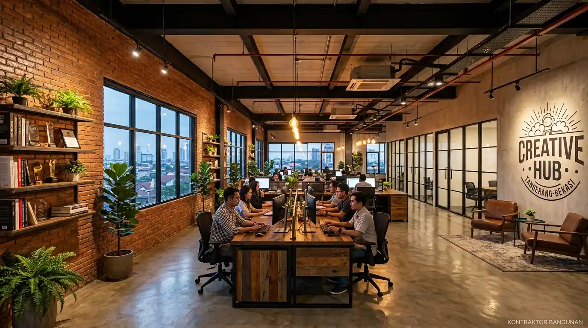

Harga Jasa Redesain Interior Kantor Wilayah Tangerang & Bekasi
Estimasi jasa interior kantor tangerang dan Bekasi berkisar antara Rp 1,8 juta hingga Rp 3,5 juta per m² mencakup partisi sekat, workstation modular, dan instalasi kelistrikan.


Proyek renovasi dan fit-out interior kantor modern di area perkantoran komersial Tangerang dengan konsep workstation modular hemat ruang.
- Estimasi Transparan: Biaya redesain kantor Tangerang & Bekasi mulai Rp 1,8 jt/m² dengan sistem Bill of Quantities (BoQ) terperinci.
- Solusi Sekat Modular: Menggunakan partisi aluminium kaca & kain akustik yang fleksibel dibongkar pasang tanpa merusak lantai gedung.
- Kecepatan Instalasi: Sistem pabrikasi off-site mempersingkat durasi pengerjaan di lokasi hingga 50% lebih cepat.
- Garansi Komprehensif: Garansi konstruksi dan furnitur kantor resmi didukung gratis survei lokasi ke BSD, Gading Serpong, hingga Cikarang.
- Berapa Kisaran Biaya dan Faktor Penentu Harga Jasa Interior Kantor Tangerang & Bekasi?
- Mengapa Sekat Ruangan Kantor Bekasi dan Tangerang Menjadi Solusi Ruang Kerja Produktif?
- Bagaimana Tips Mendapatkan Harga Renovasi Kantor Murah Tanpa Mengorbankan Kualitas?
- Tabel Komparasi Paket Renovasi Interior Kantor: Refresh vs Modular vs Full Fit-Out
- Tahapan Proses Pengerjaan Desain dan Fit-Out Bersama PerlengkapanKantor
- Mengapa Korporat Jabodetabek Mempercayakan Fit-Out Ruang Kerja pada PerlengkapanKantor?
- FAQ: Seputar Harga, Durasi Pengerjaan, dan Garansi Renovasi Interior Kantor
- Kesimpulan Praktis
Berapa Kisaran Biaya dan Faktor Penentu Harga Jasa Interior Kantor Tangerang & Bekasi?
Kisaran harga jasa interior kantor di Tangerang dan Bekasi berada pada rentang Rp 1.800.000 hingga Rp 3.500.000 per meter persegi bergantung pada material partisi, spesifikasi kelistrikan, dan jenis furnitur kerja.
Pertumbuhan kawasan bisnis dan industri di wilayah penyangga Jakarta—seperti BSD City, Alam Sutera, Gading Serpong, Karawaci di Tangerang, serta Summarecon Bekasi dan Kawasan Industri Cikarang—telah mendorong tingginya permintaan renovasi ruang kerja modern. Berdasarkan data Indonesia Commercial Property Index (2025/2026), lebih dari 68% perusahaan startup dan cabang korporat memilih merenovasi ruko atau gedung sewa dengan sistem modular untuk memangkas modal awal (CapEx) hingga 35%.
Beberapa faktor kunci yang secara langsung menentukan total anggaran renovasi kantor antara lain:
- Luas Total dan Kondisi Awal Ruangan: Apakah bangunan berupa bare-unit (kondisi beton polos) atau semi-furnished yang hanya membutuhkan penataan ulang partisi dan furnitur.
- Jenis Material Sekat Partisi: Penggunaan partisi partisi gypsum, aluminium kaca tempered, atau partisi akustik fabric memiliki selisih harga per meter linier.
- Integrasi Mekanikal & Elektrikal (MEP): Penataan jalur kabel LAN server, stopkontak meja tanam (pop-up socket), serta pengaturan tata cahaya lampu LED ruang rapat.
- Kustomisasi Furnitur Kerja: Pilihan antara workstation modular standar pabrikan dengan meja custom finishing HPL bernuansa premium kayu.
Mengapa Sekat Ruangan Kantor Bekasi dan Tangerang Menjadi Solusi Ruang Kerja Produktif?
Sekat ruangan kantor memberikan keseimbangan sempurna antara privasi fokus staf, peredam kebisingan antar departemen, dan optimalisasi pencahayaan alami di ruang kantor.
Tren desain ruang kantor pasca-pandemi telah bergeser dari konsep open-space murni yang bising menuju Activity-Based Working (ABW). Staf membutuhkan area khusus untuk rapat cepat, ruang kerja fokus tanpa gangguan telepon, serta workstation kolaboratif yang teratur.

Instalasi sekat partisi meja kerja modular dengan panel kain akustik dan meja staff terintegrasi cable ducting di kawasan perkantoran Bekasi.
Keunggulan utama mengaplikasikan partisi sekat kantor modern dari PerlengkapanKantor:
Sistem Knock-Down Fleksibel
Mudah dibongkar dan ditata ulang jika terjadi penambahan jumlah staf atau relokasi kantor di masa depan.
Kerapian Manajemen Kabel (Cable Duct)
Jalur kabel listrik, kabel data LAN, dan telepon tersembunyi rapi di dalam rangka partisi tanpa berserakan di lantai.
Bagaimana Tips Mendapatkan Harga Renovasi Kantor Murah Tanpa Mengorbankan Kualitas?
Tips mendapatkan harga renovasi kantor murah adalah memilih kontraktor interior yang memproduksi furniturnya sendiri (direct-factory) dan memesan paket terpadu one-stop service.
Banyak pemilik bisnis terjebak menyewa desainer interior pihak ketiga yang kemudian meng-subkontrakkan pekerjaan ke banyak tukang dan vendor furnitur terpisah. Akibatnya, terjadi mark-up harga berlapis hingga 40% dan rentan saling lempar tanggung jawab jika terjadi cacat pengerjaan.
Terapkan strategi cerdas berikut untuk menghemat anggaran renovasi interior kantor Anda:
- Gunakan Furnitur Standar Modular: Meja workstation dan lemari arsip berukuran standar pabrik (seperti 120x60 cm atau 140x70 cm) memiliki harga jauh lebih ekonomis dibanding furnitur full-custom dengan bentuk melengkung rumit.
- Prioritaskan Material Tahan Lama (High Durability): Pilih daun meja berlapis HPL (High Pressure Laminate) anti-gores dan rangka kaki besi hollow dengan finishing powder coating anti-karat.
- Pilih Layanan One-Stop Fit-Out: Mempercayakan desain 3D, partisi, meja, kursi, hingga lemari arsip pada satu vendor tunggal seperti PerlengkapanKantor memberikan diskon bundling paket proyek yang jauh lebih besar.
Tabel Komparasi Paket Renovasi Interior Kantor: Refresh vs Modular vs Full Fit-Out
Pahami perbedaan cakupan pekerjaan, durasi pengerjaan, dan estimasi biaya per meter persegi untuk memilih paket yang paling tepat sesuai skala bisnis Anda.
| Paket Renovasi | Estimasi Biaya / m² | Cakupan Pekerjaan | Cocok Untuk |
|---|---|---|---|
| Basic Refresh | Rp 950.000 – Rp 1.500.000 | Pengecatan ulang dinding, penggantian lantai vinyl, penataan ulang meja kursi lama | Penyegaran kantor sewa jangka pendek / efisiensi budget |
| Modular Modern (Paling Populer) | Rp 1.800.000 – Rp 2.600.000 | Partisi sekat kaca/kain, meja workstation modular baru, kursi staff ergonomis, instalasi kabel meja | Kantor ruko, ekspansi cabang baru Tangerang/Bekasi, startup 20-50 staf |
| Full Fit-Out Premium | Rp 2.800.000 – Rp 3.800.000 | Plafon gypsum drop-ceiling, partisi kedap suara, ruang direktur VIP, meja rapat mewah, smart lighting | Head office korporat, kantor perbankan, ruang direksi, klinik estetik |
Tahapan Proses Pengerjaan Desain dan Fit-Out Bersama PerlengkapanKantor
Proses pengerjaan terstruktur dimulai dari survei lokasi gratis, perancangan layout 2D/3D, pengajuan BoQ transparan, fabrikasi presisi, hingga serah terima tepat waktu.
1. Survei & Ukur
Tim arsitek kami datang langsung ke lokasi kantor Anda di Tangerang/Bekasi tanpa biaya.
2. Desain Layout 3D
Pembuatan visualisasi 3D realistis untuk memvalidasi tata letak sebelum mulai produksi.
3. Fabrikasi Pabrik
Produksi partisi dan meja menggunakan mesin CNC presisi tinggi di pabrik pusat kami.
4. Instalasi & BAST
Pemasangan cepat dan rapi oleh teknisi bersertifikat, dilanjutkan serah terima garansi resmi.
Mengapa Korporat Jabodetabek Mempercayakan Fit-Out Ruang Kerja pada PerlengkapanKantor?
PerlengkapanKantor memiliki pengalaman lebih dari 10 tahun melayani ratusan proyek interior komersial dengan jaminan harga langsung pabrik dan kepatuhan faktur pajak lengkap.
Keunggulan utama bermitra dengan kami:
- Cakupan Area Luas: Siap melayani survei dan instalasi di seluruh wilayah Kota Tangerang, Tangerang Selatan (BSD, Serpong, Bintaro), Kabupaten Tangerang, Kota Bekasi, hingga Cikarang dan Karawang.
- Legalitas Usaha & Faktur Pajak: Sebagai badan usaha resmi, seluruh transaksi proyek kami terbitkan Faktur Pajak PPN 11% yang sah untuk laporan pembukuan fiskal perusahaan.
- Dukungan Purna Jual & Sparepart: Menyediakan layanan maintenance berkala, perbaikan hidrolik kursi, dan penambahan sekat partisi jika divisi Anda bertambah di kemudian hari.
FAQ: Seputar Harga, Durasi Pengerjaan, dan Garansi Renovasi Interior Kantor
Kesimpulan Praktis
Membangun ruang kantor yang nyaman, representatif, dan efisien di Tangerang serta Bekasi kini semakin mudah dan hemat bersama Perlengkapan Kantor. Dapatkan solusi desain interior komersial, partisi sekat ruangan kerja modern, dan workstation ergonomis bergaransi resmi dengan transparansi anggaran tanpa biaya tersembunyi.
Penulis: Tim Spesialis Perlengkapan Kantor
Divisi Desain Interior Komersial & Kontraktor Fit-Out Perlengkapan Kantor yang berfokus memberikan solusi tata ruang kantor modern, partisi workstation modular, dan efisiensi ruang kerja untuk ratusan korporat di wilayah Jabodetabek.